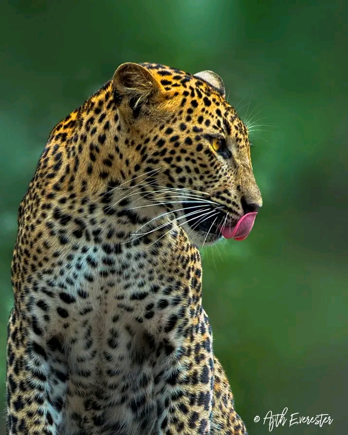

Why Visit Yala?
Yala National Park remains one of Sri Lanka's premier wildlife destinations because of its unique combination of accessible wildlife encounters and varied ecosystems. The park's dry thorn forests, open grasslands, freshwater lagoons and stretches of coastline concentrate animals in ways that allow meaningful sightings without excessive trekking. Leopards, while naturally elusive, are recorded here more often than in many other parts of the island; elephants and a wide array of birdlife also make Yala a high-probability safari destination for travellers who value both big mammals and avian diversity.
When planning a trip, expect long but scenic transfers—Tissamaharama is the main gateway and most visitors use it as their base. Yala is divided into admin blocks with different access rules; the most popular blocks offer higher sighting rates but can be busier. For a quieter experience, arrange earlier starts, ask guides for alternative blocks, or consider staying closer to less-visited park boundaries.
From a conservation and community perspective, Yala's tourism supports local livelihoods and park protection when conducted responsibly. Choose licensed operators and guides who practice minimal-impact viewing, avoid flash photography, and maintain recommended distances from animals. These small choices help keep wildlife wild and improve long-term viewing for everyone.
Logistics and comfort: sturdy transfer vehicles are recommended because park tracks can be rough; bring sun protection, insect repellent and refillable water bottles. A telephoto lens and binoculars materially improve the experience — 200–400mm covers most mammal and larger bird photography needs. Early morning and late afternoon drives offer the best sightings and golden light, so plan your schedule to include both dawn and dusk outings over at least two nights when possible.
Entry fees, jeep permits and park rules are administered at the park gate; reputable operators include these costs in their quotes. Peak season sees more visitors, so book accommodation and safaris in advance. If you're focused on photography or rare species, communicate your priorities to the operator so they can tailor routes and timing to your needs.
Quick best practice: travel with a licensed small-group operator, respect viewing distances, and follow your guide's instructions — responsible tourism directly benefits conservation and improves sighting chances for future visitors.